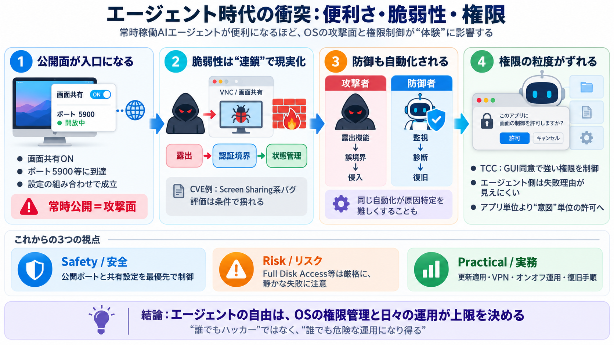

CVE-2026-65400: macOS Screen Sharing Under Attack
The vulnerability, tracked as CVE-2026-65400, affects the Screen Sharing feature. According to Apple’s official security…

The vulnerability, tracked as CVE-2026-65400, affects the Screen Sharing feature. According to Apple’s official security…
CVE-2026-65400 is an authentication vulnerability in macOS Screen Sharing, and it has moved from a patching concern to a…
The macOS Screen Sharing vulnerability is a pre-authentication flaw in that daemon. An attacker who can reach port 5900 …
Calif stated it is withholding technical details of CVE-2026-65400 until most users have patched, given the ease with wh…
CVE-2026-65400 is a remote code execution (RCE) vulnerability in the macOS Screen Sharing service, which listens on TCP …